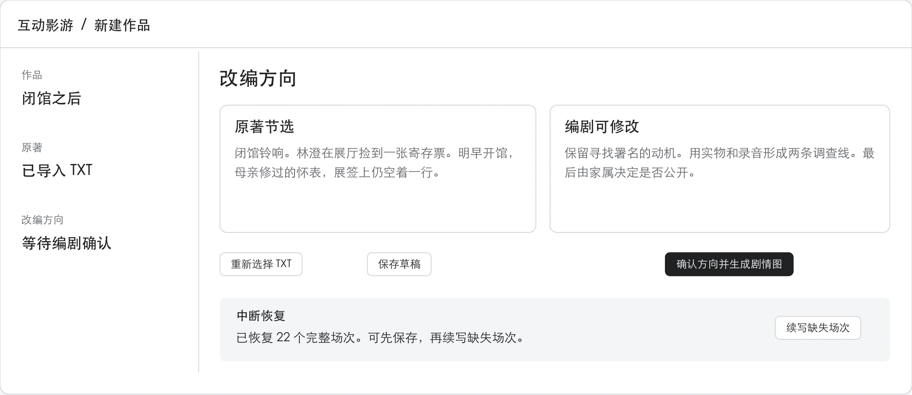
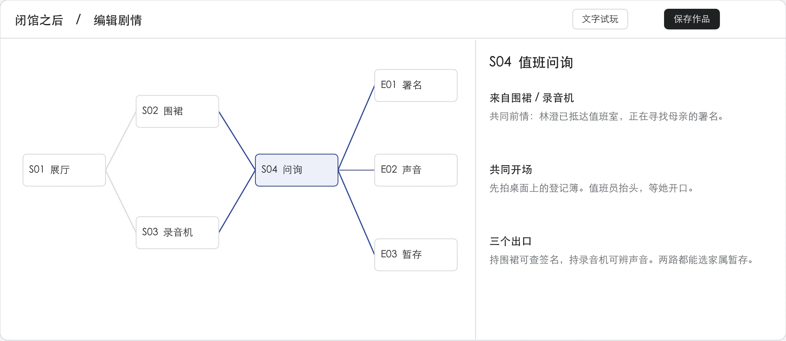
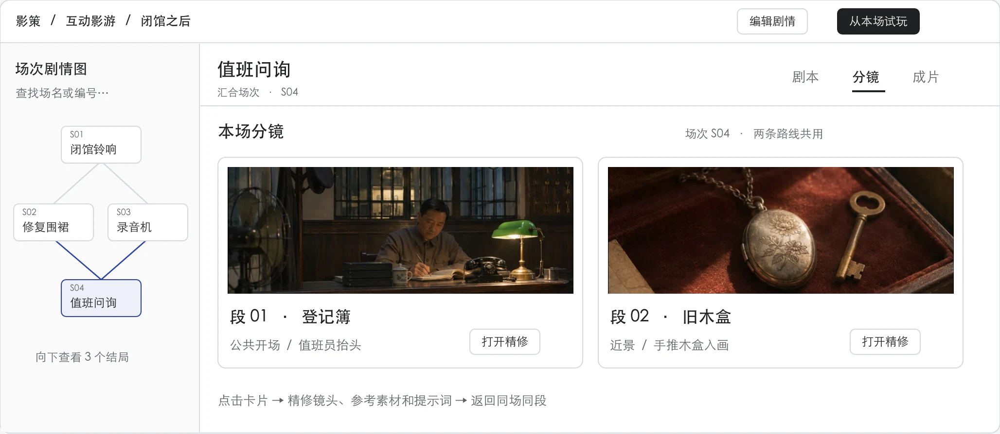
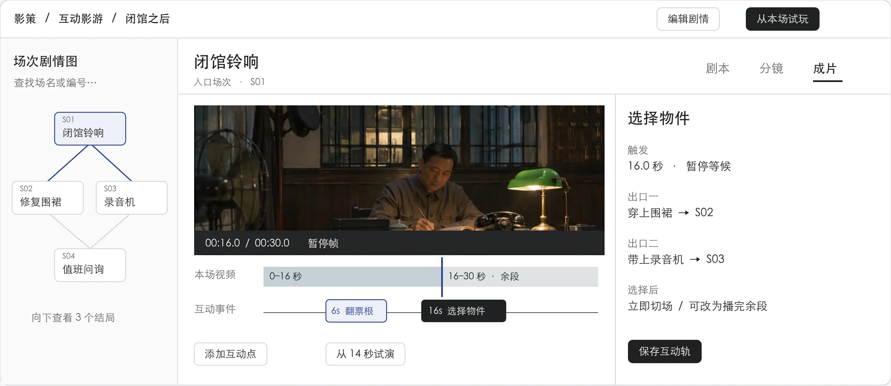
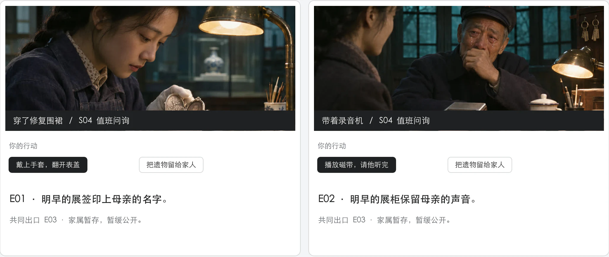
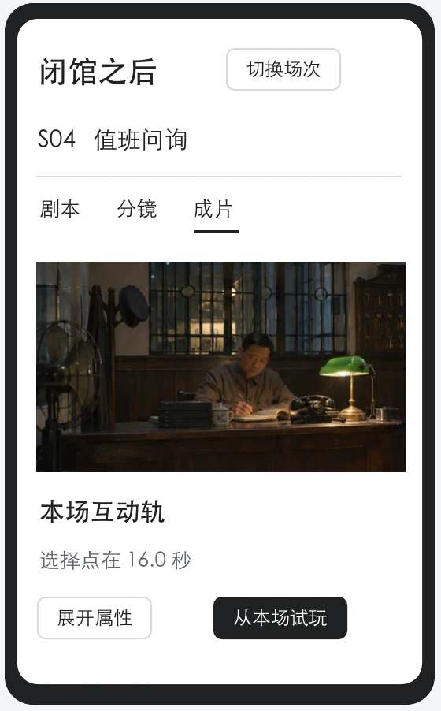

R1 编剧 / 作品库 → 新建作品
先确认故事该怎样改
导入小说后，左侧保留原著和处理进度，右侧并排阅读原文、修改改编方向。已有有效剧情图的作品直接回制作台。

点击生成
说明本次任务范围和计价，显示输出进度。生成后选中入口场，编剧可以立即文字走戏。
中途停下
保留完整场次和手工修改。示例恢复 22 场后可先保存，再续写缺口。
R2 编剧 / 编辑剧情
让两条来路共用一场好戏

选中 S04
右侧列出两条来路。共同前情是林澄来找署名。开场先拍登记簿和抬头的值班员，给两路留下不同的下一个动作。
编辑出口
围裙路线可查验表盖，录音机路线可播放磁带。两路都能暂存遗物。校验失败会标出场次、来路与需修订的条件。
R3–R4 导演 / 制作台 → 分镜
在剧情图上选场，继续用短剧的制作工具

进入与投产
选场只读取剧本与已有镜头。待制场提供「开始制作本场分镜」。汇合场复用一个制作单元。
精修与返回
打开剧情段卡片，修改镜头动作、对白、参考素材或提示词。关闭后回到原场原段，改稿后可以对照已拍快照。
R5 导演 / 制作台 → 成片
把选择放在表演发生的那一秒

- 在成片上定位 6 秒，添加画面热点，在票根上圈出可点击区域，设为 10 秒收起。点中展示背面的日期，记下线索并原地续播。
- 在 16 秒添加物件选择，绑定「穿上围裙 → S02」「带上录音机 → S03」。时间轴自动分出前段和 14 秒余段。
- 默认选完立即切到物件特写。若要保留值班员的反应，选择「播完余段」。保存后从 14 秒试看一次，回编辑时播放头仍在原处。
替换视频或移动互动点
重剪后锚点关联旧版本。新片只有 12 秒时，将原 16 秒选择标为越界，定位到对应事件，让导演移动或移除后再确认。输入窗口重叠时展示两个时段。
R6 测试者 / 从本场试玩
同一间值班室，两种可以采取的行动

玩家视图
热点靠近票根，慢呼吸三次后保持静止。确认物件后进入专属反馈镜头，问询场根据携带物给出行动。声音证据同时配字幕。
作者分析
从 S04 选择实际来路或设置初态。查看「录音机行动隐藏，因为本轮持围裙」。退出试玩可回到有关场次或锚点。
审核时走三遍：见过票根并穿围裙 → 展签署名；错过票根并带录音机 → 口述档案；从物件选择前重试 → 家属暂存。
R3 / R5 / R6 手机与恢复
在小屏上也能找到原场、原段和原帧


导航收起，监视器保留
用「切换场次」展开 DAG 抽屉。切完收起，在当前成片下展开属性。热点相对实际画面定位，避开黑边和字幕。
辅助与暂停
提供文字入口、静止热点和等候模式。进入后台后冻结选择计时，返回时从暂停处继续。
草稿与故障
生成中断可恢复，视频加载失败可重试或转文字。发生写入冲突时保留编辑内容，取回最新版本供比较。
产品审核单
请按本章样片确认三项。正式签认记录在 Markdown PRD 的第七节。
- 默认作品入口、左侧场次 DAG、右侧三页签和成片下的互动轨是否符合日常制作习惯？
- 片中选择默认暂停、选完立即切场，同时允许保留余段，是否符合导演的剪辑预期？
- 一条可错过线索、一个携带位和三个结局，是否足以验证首版要实现的玩法？